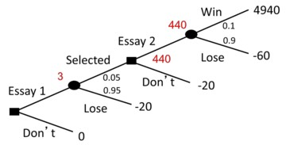
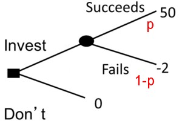
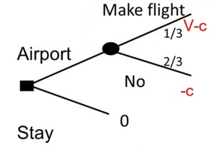
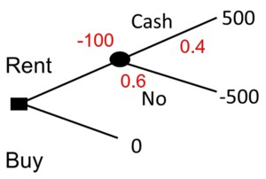
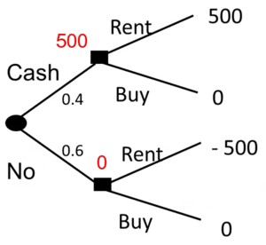

Introduction to Decision Making
Decision models encode how people make decisions as well as how they should make decisions.
- Positive models predict the behavior of others.
- Normative models provide guidance on how to make better, more consistant decisions.
- Multi criteria models make decision using multiple input variables.
- Spatial models are multi-criteria decision-making models that assume that there are a two dimensions and an ideal point. They try to infer how far the query is from the ideal point for each feature.
- Multi-criteria models: These models allow for the consideration of multiple factors in the decision-making process.
- Probabilistic models: These models incorporate uncertainty into the decision-making process.
Decision trees can be used to handle uncertainty with the added bonus that trees make it easy to evaluate the value of information they encode.
Multi-criterion Decision-making (MDCM)
Multi-criterion decision making (MDCM)can be based on qualitative or quantitative criteria.
Example 1 (Qualitative house ranking model)
- Listing the criteria for evaluation.
- Checking each criterion for each house under consideration.
- Tallying the checks per house
- Selecting the house with the highest number of criteria met.
Example 2 (Quantitative house ranking model) If we now also add a weight column, we can then assign different relative strength for each criteria reflecting its merits in determining the outcome which will make the model more powerful. Since we can now calibrate the weights of the model to our data, it is now quantitative model.
Spatial Choice Models
Spatial choice models assume the existence of an ideal point, representing an optimal balance of attributes. The model focuses on the difference between the available choices and the ideal point for each feature.
This model can be can be on one dimension, e.g. the size of a television screen, or it can be on multidimensional, e.g. when choosing between cars or political candidates, where multiple issues might be relevant.
Spatial choice models can be used both normatively, to guide decision-making, and positively, to understand an individual’s preferences based on their choices.
Hamburgers are a favorite example in economics.
Example 3 (The Ideal Cheeseburger) Imagine the ideal burger: 2 cheese slices, 2 patties, 2 tomatoes, 4 tbsp of ketchup, 4 tbsp of mayo and 4 pickles.
This is our ideal point in six-dimensional space. Now let’s compare
- The Big Mac
- scores 2, 2, 0, 3, 4, 6.
- absolute value of the difference from the ideal: 0, 0, 2, 1, 0, 2.
- adding up we get 5.
- The Whopper
- scores 2, 1, 2, 3, 4, 4
- and so the absolute value of the difference is 0, 1, 0, 1, 0, 0
- adding up gives 2.
\(2<5 \implies\) we will decide to get a Whopper
Probability: The basics
There are several approaches to probability:
- Classical probabilities
- Frequentist
- Bayesian/Subjective probabilities
The Frequentist approach is the most common followed by the Bayesian one. Probability is defined as the likelihood of some future event happening. There are three axioms of probability that are universally true:
- P1 \(P(A) \in [0,1]\) if \(P(A)=1\) we call it the impossible event, and is \(P(A)=1\) we call it the certain event.
- P2 \(i \ne j \implies x_j \bigcap x_i = \emptyset \text{ and } P(\bigcup x_i) = \mathbb{1} \sum_{\omega \in \Omega} P(X=x_\omega)=1\) i.e. sum of all the probabilities of all mutually exclusive outcomes of X is 1
- P3 \(\forall A \subset B \implies P(B)>P(A)\).
Decision trees
- Decision trees facilitate complex decision-making under uncertainty.
- They can improve decision-making,
- Provide insights into others’ choices,
- Enhance self-understanding.
In the real wold we rarely encounter this kind of decision tree. We do use decision trees and random forests and none of this great ideas are simple to carry out with these algorithms, however they too have other neat tricks.
A decision under uncertainty.
Example 4 (Booking trains)

For example, consider planning a trip where there’s a 40% chance of missing a 3pm train. The 3pm ticket costs $200, while the 4pm train costs $400. Buying the $200 ticket carries a 40% risk of wasting that money and incurring a total cost of $600.
A decision tree helps estimate the expected cost of each option. The $200 ticket has an expected cost of $360, making it the rational choice despite the risk.
Making Complex Decision
Next, we will consider a more complex scenario of applying for a scholarship
Example 5 (Scholarship)

A Scholarship is worth $5,000, but there is a limit of 200 applicants. To be eligible, applicants must write a two-page essay. Using these ten finalists are chose who must complete a ten-page essay. To make an informed choice we should know the probability of each events and it associated cost or benefit. Suppose we would have to would have to invest $20 for a two-page essay and $40 for a ten-page essay, should we make this investment ?
To solve the problem we need to decide is this a classification problem or a regression problem. Do we want to model the cost a number or the decision which is a binary categorical variable
- draw the tree;
- write down payoffs and probabilities
- solve backwards.
Alternatively, if we have data on the time/cost of writing previous scholarship essays, we can use a decision tree model to learn the probabilities from the data.
In the final round, there’s a 10% chance of winning $4940 and a 90% chance of losing $60, resulting in a value of \(0.9 \times - 60 USD + 0.1 \times 4940 USD = 440 USD\) The chance of reaching the final and potentially winning $440 is 5%, worth $22. There’s a 95% chance of losing $20, worth -$19. Therefore, the value of writing the first essay is $3 compared to $0 for not participating.
We can also use decision trees to infer what other people think about probabilities.1.
1 this is a useful ability for Bayesian games
Insights into others’ incentives
Example 6 (Investment opportunity)

A friend tells us about an investment she read about from @InvestorMom on subreddit r/wallstreetbets about a “short squeeze” on a gaming company called GameStop.
- It could pay us $50,000 if we put in $2,000.
- She has invested $2,000.
- Should we follow suit?
The first thing to ask is, “What would she think her likelihood of success”?
We can try to work this out using a decision tree.
Let us suppose:
- \(P(I=success)=p\)
- thus by rule P2 \(P(I=failure)=1-p\) .
- Her decision suggests that she thinks \(50p - 2(1-p) > 0 \ge 52p > 2 \ge p > 1/26 \approx 4%\).
- We can infer from her decision that she thinks that the chance of success is above 4%.
Enhancing self-understanding
We can use these trees to infer payoffs and sometimes decision trees can even reveal our own underlying values.
Example 7 (Visting the old folks at home)

Imagine having a standby ticket to visit your parents with a \(\frac{1}{3}\) chance of getting on the flight.
The decision of whether to go to the airport or not can be analyzed using a decision tree to determine how much you value seeing your parents.
Let V represent the value of seeing your parents and c represent the cost of going to the airport. Choosing not to go implies that
\[ \frac{1}{3} (V - c) -\frac{2}{3} c < 0 \implies \frac{1}{3}V < c \implies V < 3c \]
This means the value of seeing your parents is less than three times the cost of going to the airport.
Conversely, going to the airport suggests the value is greater than three times the cost.
Value of information
In models of decisions being made under uncertainty, we should consider how much would some additional information be worth to us? A benefit of using a formal model is that we can now figure this out by:
- Estimate the value without the information using the expected value of our bast option.
- Estimate the value with the value of the optimal choice with the information
- calculate the difference.
This is disarmingly simple except we will usually need the information in part 2, before we know if we should buy it.
Example 8 (Roulette wheel) In the United States a roulette wheel has 38 different options, the numbers 1 through 36 plus two other spots. If we forecast a particular option, the odds of winning are \(\frac{1}{38}\). What is the value of information here?
- Without information our expected winnings are \(\frac{100}/{38}\) USD.
- With information our expected winnings are \(100\) USD.
- Thus this information is worth \(100- \frac{100}/{38}\) USD
This is another goofy example:
- If we could get a tip for the next number 🔮 it really means is the roulette is rigged 🤑 in the worst way possible.
- If we win a few times we would be in big trouble 😨
- the tip is worthless 🥴
- we should get out ASAP. 😆
This idea is applicable in more complex scenarios.
Example 9 (Buy or rent a car) Suppose we are thinking about buying a car. We are worried about buying today since we have heard there might be a cash-back program next month in which we could get $1,000 back. We figure there’s a 40% chance there will be a cash-back program.
We might could rent a car for $500 then wait if cash-back materialises.
Now suppose we know someone at the auto company who can sell us this information, how much would it be worth to pay him?
This is fairly easy to estimate with a decision tree.
The choice is between renting or buying a car.
We can see from the figure that - the value of renting without information is $0.4 \(\$500 + 0.6 \times -\$500 = -\$100\). - the value of the buying, is $0. - buying is best without information.


If you have the information we can estimate our new expected payoffs:
\(0.4 \times 500 \text{ USD } + 0.6 \times 0 \text{ USD } = 200 \text{ USD }\)
Since before our best course had 0 USD expected payoff, this is also the value of the information.
More decision models
The decision book list around 50 of different models for different decisions. Some scenarios include marketing, picking gifts. Some are well known others obscure. The text, however, is very compact which means that these models will require additional research if they seem useful. What I liked though is that every reviewer seems to have picked a different subset.
References
Note: this page is based on the following source:
- [@page2017modelthinking] MOOC, Course material & Transcripts.
- TA Notes by [@fisher2017modelthinking].
- Student notes by in [@kleinikink2016naturalmoney] and [@groh2017model].